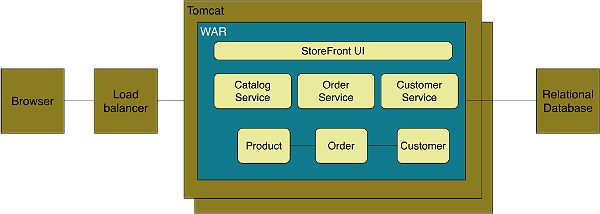
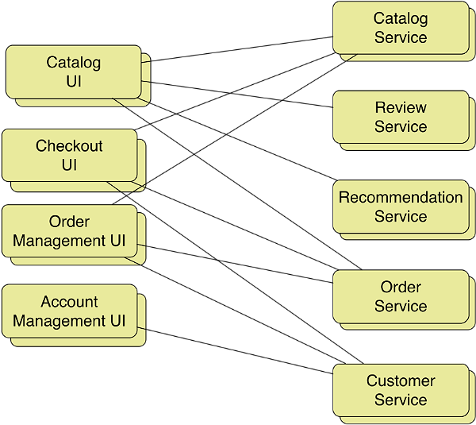
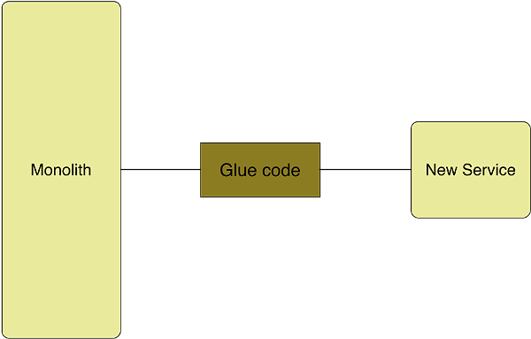

微服务：分解应用以实现可部署性和可扩展性
本文描述了日渐流行的微服务架构模式。微服务背后大的理念是将大型、复杂且历时长久的应用在架构上设计为内聚的服务，这些服务能够随着时间的流逝而演化。微服务这个术语强烈建议服务应该是很小的。
社区中有些人甚至建议构建10-100代码行（LOC）的服务。但是，尽管很小的服务是我们想要的，但这不应该是主要的目标。你应该致力于将系统分解为服务，以解决下面所讨论的开发和部署问题。一些服务可能确实会很微小，但有些可能会非常大。
微服务架构的本质并不新鲜。分布式系统的理念历史非常悠久。微服务架构也很类似于SOA。

它甚至曾经被称为轻量级或细粒度的SOA。确实是这样，思考微服务架构的一种方式就是将其视为没有商用和沉重WS*以及ESB的SOA。尽管这不是一个全新的理念，但微服务架构还是值得讨论的，因为它不同于传统的SOA，更为重要的是它能够解决目前很多组织所遇到的问题。
在本文中，你将会学习到采用微服务架构的驱动力以及如何将其与更为传统的、整体（monolithic）架构进行对比。我们会讨论微服务架构所能带来的收益及其缺点。你能够学习到如何解决使用微服务架构时所遇到的关键技术挑战，包括服务间的通信以及分布式数据管理。
整体架构（有时是有害的）
从最早为Web系统开发应用开始，最为广泛使用的企业应用架构就是将应用所有的服务端组件打包成一个单元。很多的企业级Java应用由一个WAR或EAR文件所组成。其他语言，如Ruby甚至C++，所编写的应用也是同样的情况。
比如，让我们假设一下，你正在构建一个在线商店，它会接受顾客的订单、检查库存以及可用的额度，然后完成运送。应用很可能构建成如图1所示的样子。

图1——整体的架构
应用有多个组件组成，包括StoreFront UI，它实现了用户界面，以及用来管理产品目录、处理订单和管理用户账号的服务。这些服务共享领域模型，模型中包含了实体，如Product、Order和Customer。
尽管有一个逻辑上的模块化设计，但应用还是会作为一个整体进行部署。例如，如果你使用Java的话，那么应用会由一个WAR文件组成，它会运行在Web容器中，如Tomcat。如果应用是Rails版本的话，它会由一个目录结构组成，如果使用Apache/Nginx的话，可以使用Phusion Passenger部署，或者使用Tomcat的时候，利用JRuby进行部署。
这种所谓的整体架构会有很多的优点。整体架构开发起来较为容易，因为IDE和其他的开发工具都是面向开发单个应用的。它们测试起来很容易，因为你只需要启动一个应用。整体架构的应用也很容易进行部署，因为你只需要将部署单元——一个文件或目录——复制到运行对应种类服务器的机器上就可以了。
这种方式对于相对小的应用来说，工作起来是很好的。但是，对于复杂应用来讲，整体架构就会变得很笨重了。对于开发者来说，大型的整体架构应用会很难理解和维护。对于频繁部署来说，这也是一个障碍。要部署某个应用组件的变更，你必须要构建和部署整个庞大的应用，这会很复杂、有风险、耗时，并且需要与众多的开发人员协调从而导致很长的测试周期。
整体架构使得很难去试验和采用新技术。例如，如果不重写整个应用的话，很难去尝试使用新的基础设施框架，而重写整个应用是有风险且不现实的。所导致的结果就是，你必须坚守项目初期所选择的技术。换句话说，整体架构不能进行扩展以支持大型的、长期存在的应用。
将应用分解为服务
幸运的是，有很多其他的架构风格来支持可扩展性。在《可扩展性的艺术》（The Art of Scalability）一书中，描述了很有用的三维可扩展性模型：扩展性立方，如图2所示。
图2——扩展性立方
在这个模型中，要对应用进行扩展，最常用的方式就是在负载均衡器后面运行多个完全相同的应用，这也就是所谓的X轴扩展。对于提升应用的处理能力以及可用性来讲，这是一种很好的方式。
当使用Z轴扩展时，每个服务器都运行着相同的代码。在这方面，它很类似于X轴扩展。很大区别在于每个服务器只负责数据的一个子集。系统中会有些组件负责将每个请求路由到对应的服务器。一个常用的路由条件就是请求的属性，如要访问实体的主键，这也就是所谓的sharding。另外一个常见的路由条件是客户类型。例如，相对于免费客户，应用可能需要对收费客户提供更高的SLA，这样的话，就需要将收费客户的请求路由到具有更高处理能力的不同服务器上面。
Z轴扩展，类似于X轴扩展，提升了应用的处理能力和可用性。但是，它们都无法解决不断增长的开发和应用复杂性。为了解决这些问题，我们需要Y轴扩展。
扩展的第三个维度称为Y轴扩展或功能分解。与Z轴扩展中对事情进行拆分类似，Y轴扩展会将不同的事情进行拆分。在应用层，Y轴扩展会将庞大的整体应用拆分为一组服务。每个服务实现一组相关的功能，如订单管理、客户管理等。
决定如何将系统拆分为一组服务在很大程度上来讲是一门艺术，不过有一些策略可以提供帮助。拆分服务的一种方式是按照动词（verb）或者是用例来进行拆分。例如，稍后你会看到拆分后的在线商店应用包含了Checkout UI服务，它实现了结账用例的UI功能。
另外一种拆分方式就是将系统按照名词或者说是资源进行拆分。这种服务会负责给定类型实体/资源的所有操作。例如，稍后你会看到如何使在线商店具有一个Catalog服务，它会管理产品的目录。
理想情况下，每个服务应该只有很小的一个责任集合。Bob大叔Martin曾经提出过使用单一责任原则（Single Responsible Principle，SRP）来设计类[PDF]。SRP将类的职责定义为变更的原因，应该只有一个原因会导致某个类产生变更。当设计服务时，使用SRP也是很有价值的。
服务设计时，另外一个可以提供帮助的类比对象就是Unix的系统工具。Unix提供了大量的工具集，如grep、cat和find。每个工具只做一件事情，通常会做的特别好，而且可以通过shell脚本与其他工具联合起来执行复杂的任务。遵循Unix系统工具的方式对服务进行建模是很好的，这种方式会创建出单一功能的服务。
要强调的很重要的一点就是分解的目标并不在于片面追求微小（如如有些人所主张的10-100代码行）的服务。与之相反，它的目标在于解决上文中所提到的整体架构所面临的问题和限制。有些服务很微小是非常合适的，不过其他的会更大一些。
如果对样例应用使用Y轴分解的话，我们得到的架构如图3所示。

图3——微服务架构
分解后的应用包含了各种前端服务以及多个后端服务，这些前端服务实现了各个部分的用户界面。前端服务包含了Catalog UI，它实现了产品搜索和浏览，还包括Checkout UI，它实现了购物车和结账过程。后端服务包括了相同的逻辑服务，这些已经在本文开始的时候进行了描述。我们已经将应用中的每个主要组件转换成了单独的服务。让我们看一下这样做的结果是什么。
微服务架构的收益与缺点
这种架构能够带来很多的收益。首先，每个微服务相对比较小。对于开发人员来说，代码更易于理解。很小的代码基并不会拖慢IDE，因此能使开发人员更为高效。同时，每个服务在启动方面也比大型的整体应用快得多，这同样会使得开发人员更为高效，并且会加速部署。
第二，每个服务可以独立于其他服务进行部署。如果负责某个服务的开发人员需要部署一个变更，这个变更仅仅涉及到这个服务本地的内容，那么他们没有必要协调其他的开发人员。他们可以只部署自己的变更就可以了。微服务架构使得持续部署变得可行。
第三，每个服务可以独立于其他服务使用X轴克隆和Z轴分区进行扩展。此外，每个服务可以部署到最适合其资源需求的硬件上。这与使用整体架构时有很大的区别，在整体架构中，具有严重资源需求差异的组件（如CPU密集与内存密集）必须部署在一起。
微服务架构使得开发的扩展也变得更为容易。你可以围绕多个小团队（如两个披萨原则）组织研发。每个团队只需负责开发和部署一个服务或一组相关的服务。每个团队能够独立于其他的团队开发、部署和扩展他们的服务。
微服务架构同时也能提升故障的隔离性。例如，某个服务中的内存泄露只会影响到这个服务自己。其他服务能够继续正常地处理请求。与之形成对比的是，整体架构中如果有一个不合格的组件，那么将会拖垮整个系统。
最后但并非最不重要的，微服务架构消除了对某个技术栈的长期依赖。原则上，当开发新的服务时，开发人员可以任意选择最适合该服务的语言和框架。当然，在很多组织中，限制可选的技术方案是有一定的道理的，不过关键的一点在于，你不再受制于过去所作出的决策。
另外，因为服务比较小，使用更好的语言和技术重写它们变得更为可行。这也意味着，如果对一项新技术的尝试失败的话，你尽可以抛弃这个成果，而不会对整个项目带来风险。这与采用整体架构有很大的区别，在整体架构中，初始的技术选择严重限制你将来采用不同语言和框架的能力。
缺点
当然，没有什么技术是银弹，微服务架构有一些明显的缺点和问题。首先，开发人员必须要处理创建分布式系统所带来的额外的复杂性。开发人员必须要实现进程间的通信机制。要实现跨多个服务的用例的话，如果不使用分布式事务是很难完成的。IDE以及其他的开发工具关注于开发整体架构的应用，并没有为开发分布式应用提供明确的支持。编写涉及到多个服务的自动化测试用例也是很有挑战的。在开发整体架构应用时，你无需处理这样的问题。
微服务架构同样引入了明显的运维复杂性。在这种架构下，有了更多正在运行中的不同部件，也就是不同类型服务的多个实例，在生产环境下必须对它们进行管理。为了成功做到这一点，你需要一个高度自动化的工具，要么是自己编写代码，要么是类似于PaaS的技术，如Netflix Asgard及其关联组件，或者是现成的PaaS，如Pivotal Cloud Foundry。
同时，部署跨多个服务的特性时，需要认真地协调不同的开发团队。根据服务间的依赖关系，你要创建服务如何按顺序部署的规划。这与整体架构有着很大的差异，在整体架构模式下，你可以很容易一次性地更新多个组件。
使用微服务架构的另外一个挑战就是要决定在应用生命周期的哪个时间点上采用这种架构。当开发应用的第一个版本时，这种架构所能解决的问题你通常还不会遇到。另外，使用复杂的、分布式的架构将会延缓开发。
对于初创公司来讲，这可能是一个两难的困境，它们最大的挑战通常在于如何快速地演化业务模型以及相关的应用。使用Y轴分解可能会使得快速迭代更为困难。稍后，当挑战变成如何扩展的话，你需要进行功能分解，此时混乱的依赖关系可能让你很难将整体的应用分解为一组服务。
鉴于这些问题的存在，采用微服务架构不应该是草率做出的决策。但是，对于需要进行扩展的应用，如面向客户的Web应用或SaaS应用，这通常是正确的选择。知名的站点如eBay[PDF]、Amazon.com、Groupon以及Gilt都已经从整体架构转移到微服务架构上来了。
既然已经看过了其收益和缺点，现在我们来看一下在微服务架构中几个关键的设计问题，首先是应用内部以及应用与客户端之间的通信机制。
微服务架构中的通信机制
在微服务架构中，客户端和应用之间以及应用的组件之间的通信机制与整体架构是有所不同的。我们首先看一下应用的客户端与微服务交互的问题，稍后，会看到应用内部的通信机制。
API网关模式
在一个整体架构的应用中，应用的客户端，如Web浏览器和原生的应用，会发起HTTP请求，负载均衡器将请求转发到N个完全相同的应用实例中的某一个上面。但是在微服务架构之中，庞大的应用被替换为一组服务。所造成的结果就是，我们需要回答客户端到底与谁交互的问题。
应用的客户端，如原生的移动应用，可以对单个服务发起RESTful HTTP请求，如图4所示。

图4——直接调用服务
表面上看，这种方式可能会很有吸引力。但是，在粒度方面，单个服务的API与客户端所需要的数据之间可能会存在明显的不匹配。例如，展现一个Web页面可能需要调用大量的服务。举例来说，Amazon.com描述了一些页面需要调用100个以上的服务。发起如此之多的服务，即使是在高速互联网连接之中也会导致低效和很差的用户体验，更别提更低带宽、更高延迟的移动网络了。
一种更好的方式是让客户端在每个页面发送少量的请求，可能只有一个，这样的请求会通过互联网发送到前端服务器上，这种服务器称之为API网关，如图5所示。

图5——API网关
API网关位于应用的客户端和微服务之间。它提供了针对客户端定制的API。API网关为移动客户端提供粗粒度的API，为桌面客户端提供细粒度的API，因为桌面客户端能够使用高性能的网络。在本例中，桌面客户端发起多次请求来检索关于某个产品的信息，而移动客户端只发送一次请求。
API网关在处理传入的请求时，会通过高性能的LAN对一定数量的微服务发起请求。例如，Netflix描述了如何将每个请求发散为平均6个后端服务。在本例中，来自于桌面客户端的细粒度请求只是简单代理到对应的服务上，而来自移动客户端的每个粗粒度请求得到了处理，在这里会将调用多个服务的结果进行聚合。
API网关不仅优化了客户端和应用之间的通信，而且还封装了微服务的细节。这样的话，就能使微服务的演化不至于影响到客户端。例如，两个微服务可能会进行合并。另外的某一个微服务则可能会拆分为两个或更多的服务。只有API网关需要更新以适应这些变化，客户端并不会受到影响。
我们已经看到了API网关如何在应用及其客户端之间进行协调，现在来看一下如何在微服务之间实现通信。
服务间通信机制
微服务架构的另外一个重要差异就是应用的不用组件之间如何进行交互。在整体架构的应用之中，组件调用其他的组件会使用常规的方法调用。但是在微服务架构中，不同的服务运行在不同的进程之中。由此导致的结果就是服务必须使用进程间通信机制（inter-process communication，IPC）来实现通信功能。
同步HTTP
在微服务架构中，有两种主要的方式来实现进程间的通信。一种可选的方案是基于HTTP的同步机制，如REST或SOAP。这是一种简单且熟悉的IPC机制。它对防火墙友好，所以在互联网上广泛使用并且请求/响应（request/reply）式的通信较为简单。HTTP的不足之处在于它不支持其他的通信模式，如发布-订阅（publish-subscribe）。
另外一个限制就是客户端和服务器必须同时可用，但是这并不是永远都能保证的，因为分布式系统容易产生局部的故障。同时，HTTP客户端需要知道服务器的主机和端口。尽管听起来这没什么问题，但实际上并没有那么简单，尤其是在云部署的时候，会使用自动扩展的机制，服务实例的生命周期是很短暂的。应用需要使用一种服务发现机制。有些应用使用服务注册器，如Apache ZooKeeper或Netflix Eureka。在其他的应用中，服务必须注册到负载均衡器中，如在一个Amazon VPC内部使用的ELB。
异步消息
同步HTTP的一个替代方案就是基于消息的异步机制，如基于AMQP的消息broker。这种方式有一些优点。它解耦了消息的生产者和消费者。消息broker会一直缓存消息，直到消费者能够处理它们为止。生产者完全不用关心消费者。生产者只需与消息broker交互就可以，无需使用服务发现机制。基于消息的通信机制同时支持多种通信模式，包括单向请求以及发布-订阅。使用消息的一个不足之处在于需要有消息broker，这个运转部件会为系统添加复杂性。另外的一个不足之处在于它与请求/响应式的通信机制并不能自然融合。
两种方式各有利弊。应用通常会混合使用这两种方式，例如，在下一节中将会讨论如何解决架构拆分所带来的数据管理问题，你就会看到怎样使用HTTP与消息了。
去中心化的数据管理
将应用拆分为服务的一个结果就是数据库也会进行拆分。为了确保低耦合，每个服务有自己的数据库（模式）。另外，不同的服务可能使用不同类型的数据库——这就是所谓的多种类持久化架构（polyglot persistence architecture）。例如，需要ACID事务的某个服务可能会使用关系型数据库，而管理社交网络的服务可能会使用图数据库。拆分数据库是很必要的，但是我们现在有了一个新的问题需要解决：有些请求要访问多个服务的数据，这样的请求该如何处理。让我们先看一下如何处理读请求，然后再看一下更新请求。
处理读
例如，考虑在线商店中的每个顾客都有一个信用额度。当顾客试图下订单时，系统必须检查所有订单的总额不超过他们的信用额度。在整体架构的应用中实现这种逻辑规则会很简单。但是如果在系统中，顾客要通过CustomerService来管理，订单要通过OrderService来管理，那么实现这种检查就困难多了。OrderService必须要以某种方式访问CustomerService所维护的信用额度。
一种解决方案是OrderService通过发起对CustomerService的RPC调用检索到信用额度。这种方式实现起来很简单，并且能够确保OrderService能够得到最新的信用额度值。不足之处在于它降低了可用性，因为为了下一个订单，必须要保证CustomerService处于正在运行的状态。它也会因为额外的RPC调用增加响应的时间。
另外一种方式就是OrderService保存信用额度的一个副本。这消除了对CustomerService所发起的请求，所以能够增加可用性并降低响应时间。但是，它意味着我们必须实现一种机制，每当CustomerService服务中的信用额度更新时，同时要更新OrderService中的副本。
处理更新请求
确保OrderService中的信用额度保持最新只是一类更通用问题的特例，这类问题就是如何处理多个服务共有数据的更新请求。
分布式事务
当然，一种解决方案就是使用分布式事务。例如，当更新顾客的信用额度时，CustomerService可以使用分布式事务同时更新自身的信用额度以及由OrderService维护的对应的信用额度。使用分布式事务能够确保数据始终是一致的，不足之处在于使用它会降低系统的可用性，因为为了事务能够提交，必须要求所有的参与者均可用。另外，分布式事务确实有些不再受欢迎了，现代的软件栈通常都不会支持它，如REST、NoSQL数据库等等。
事件驱动的异步更新
另外一种方式是使用事件驱动的异步复制（asynchronous replication）。服务发布事件声明有些数据发生了变化，其他的服务订阅这些事件并更新它们的数据。例如，当CustomerService更新顾客的信用额度时，它发布一个CustomerCreditLimitUpdatedEvent，这个事件中包含了顾客的id以及新的信用额度。OrderService订阅这些事件并更新其信用额度的副本。事件的流程如图6所示。

图6——使用事件复制信用额度
这种方式主要的优点在于事件的生产者和消费者实现了解耦。这不仅简化了开发，相对于分布式事务，它还提升了可用性。如果某个消费者不能处理事件的话，消息broker会将消息放到队列中，直至消费者处理为止。这种方式的主要缺点在于它为了可用性牺牲了一致性。应用的编写方式必须能够容忍最终一致性数据。开发人员可能也需要实现事务补偿来执行逻辑回滚。尽管存在这些缺点，对于很多应用来说，这是推荐的方式。
重构整体架构的庞然大物
令人遗憾的是，我们通常并没有这样的好运气从事一个全新的、尚未进行开发的项目。很可能你所在的团队负责一个庞大的、令人生畏的整体架构应用。每天你都在处理本文开头时所提到的那些问题。好消息是你可以使用一些技术将庞大的应用拆分为一组服务。
首先，停止让问题变得更糟糕。不要继续在这个庞然大物上添加代码来实现重要的新功能。与之相反，你应该以某种方式将功能实现为独立的服务，如图7所示。这可能并不容易做到，你需要编写凌乱复杂的胶水代码来实现服务与庞大应用的集成。但是，对于拆分整体架构的应用来说，这是很好的第一步。

图7——抽取服务
第二，识别整体应用中的一个组件，然后将其转换为内聚且独立的服务。要进行抽取时，比较好的可选组件包括那些经常变化的或具备不一致资源需求的组件，如需要大量内存缓存或CPU密集型操作。展现层也是一个很好的可选项。你将组件转换为服务，并编写胶水代码使其能够与应用的其他部分进行交互。再次强调一遍，这可能会比较痛苦，但是能够让你渐进式地迁移到微服务架构。
总结
在构建企业级应用时，整体架构模式是一种常用的模式。对小型应用来说，它的确运行的很不错：开发、测试以及部署小的整体架构应用相对很简单。但是，对于大型的复杂应用，整体架构就成为开发和部署的障碍了。很难做到持续交付，并且通常会长期局限于最初所作出的技术选择。对于大型的应用，使用微服务架构会更好，这种架构会将应用拆分为一组服务。
微服务架构有很多的优势。例如，单个服务更易于理解，可以独立于其他服务进行开发和部署，更易于使用新的语言和技术，因为你可以每次在服务中尝试新的技术。微服务架构也有一些明显的不足。尤其是，应用要复杂得多，会有更多的运行时组件。你需要高度的自动化，如PaaS，才能有效地使用微服务。在开发微服务时，你还要处理一些复杂的分布式数据管理问题。尽管有这些不足，但是对于快速演化的大型复杂应用，尤其是SaaS风格的应用来讲，微服务架构是很有意义的。
要将已有的整体架构应用演进为微服务架构，可以采用多种策略。开发人员应该将新功能实现为单独的服务，并编写胶水代码将服务与庞大的应用进行集成。另外一种很好的办法就是迭代式地识别组件并将其从整体架构中抽取出来，然后将其转换为服务。尽管演进过程并不简单，但是总比开发和维护笨重的整体架构应用要强得多。
关于作者
Chris Richardson是一名开发人员和架构师。他是Java专家以及JavaOne上的明星，以及POJOs in Action一书的作者，这本书描述了如何使用POJO和Spring、Hibernate这样的框架编写企业级应用。Chris也是Cloud Foundry最初的创立者，这是针对Amazon EC2的早期Java PaaS。他为组织提供咨询服务，促使他们采用云计算、微服务以及NoSQL这样的技术提升开发和部署应用的水平。他的Twitter @crichardson。
查看英文原文：Microservices: Decomposing Applications for Deployability and Scalability
深度内容
开发由云支持的端到端物联网解决方案
Markku Lepisto 11月18日

利用云端开发测试平台实现精益创业
陈伟基 11月17日


领域驱动设计精简版（全新修订）
Eric Evans 11月16日
.png)
InfoQ每周精要
通过个性化定制的新闻邮件、RSS Feeds和InfoQ业界邮件通知，保持您对感兴趣的社区内容的时刻关注。

您好，朋友！
您需要 注册一个InfoQ账号 或者 登录 才能进行评论。在您完成注册后还需要进行一些设置。获得来自InfoQ的更多体验。
告诉我们您的想法